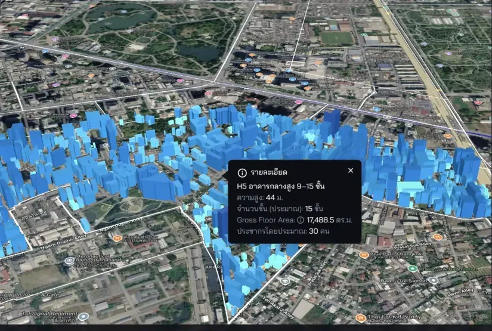

CityMETER
Explore land, buildings, business, movement, people, and risk in one map, and see how the pieces of a place connect.
City Data + AI ecosystem from Thailand
See the city clearlyShape a more liveable tomorrow for everyone
Landometer turns scattered city data into clear pictures, actionable insight, and tools for decisions about land, location, and urban life.

LAND
Bring portfolios, parcels, buildings, and infrastructure into one view so decisions can begin with what is actually there.

LOCATION
Connect business, movement, people, and risk to real locations to reveal both the opportunity and the context around it.
LIVING
Data gains meaning when it connects back to people, services, wellbeing, and the everyday experience of using a city.
How we can help
Start with tools that are ready to explore, or bring us in to shape an approach around your question.
Explore land, buildings, business, movement, people, and risk in one map, and see how the pieces of a place connect.
Discover neighbourhoods through stories that connect data with local context, written to be read, found, and taken into the city.
Combine data, methods, and tools around an organisation's question, from framing the problem to a prototype the team can use together.

ใช้งานง่าย รวบรวมข้อมูลหลายๆอย่างให้อยู่ในเว็บเดียว


ชอบมากค่ะ ใช้งานง่าย เราทำงานง่ายขึ้น ใช้เวลาน้อยลงมาก ในขณะที่ผลิตงานคุณภาพดีขึ้นมาก ทางทีม Landometer ยังพัฒนา app ทำให้มีฟีเจอร์ใหม่ๆ อยู่เสมอด้วยค่ะ


ธุรกิจพัฒนาบ้านจัดสรรและคอนโดอย่างเรา จำเป็นต้องสะสม Landbank ไว้พัฒนา Landometer.com ช่วยให้เราวางแผนการใช้งาน Landbank ได้มีประสิทธิภาพยิ่งขึ้น


Landometer.com เปิดโลกให้เราเห็นผลลัพธ์ของทุกความเป็นไปได้ ว่าจะถือครองที่ดินต่อ หรือนำไปทำอะไรจะได้ผลดีกว่ากัน ช่วยได้มากในยามที่มีประเด็นเรื่องภาษีที่ดินใหม่


พลอยมีที่ดินทั้งของบริษัท และของที่บ้าน พอได้ลองใช้ Portfolio ของ Landometer เห็นชัดเลย เพราะได้เปรียบเทียบที่ดินของเราทุกโฉนด ทั้งกระดานในคราวเดียว


ใช้งานได้ดีมาก ระบบหลังบ้านก็ให้คำแนะนำดี

CityMETER · Showcases
Explore the city through 38 views, from land value and buildings to business, people, movement, and risk.
38 views · 14 Aug 2026

CityWiki
Stories of neighbourhoods and places that connect CityMETER data with research and local context.

Landom · The people
A multidisciplinary team that believes in data, imagination, and learning from real places.

Our story
We measure what helps people see a place more clearly, explain why it matters, and turn understanding into a next step that can actually happen.
Landometer began with a simple question: why does an abundance of city data still fail to help people see the same place clearly? We started by connecting data back to real locations, then shaping images, language, and tools that help people in different roles understand the same question together — from land and location to everyday urban life.
Next, we are building Landometer into a City Data + AI ecosystem that turns scattered information into Locale Insight that is clear, verifiable, and ready to use. We want people to see choices and consequences before they decide, so each step can move a real place toward a more liveable future for everyone.
Let us cultivate our city with data.
Follow what we are seeing, learning, and making with the city.